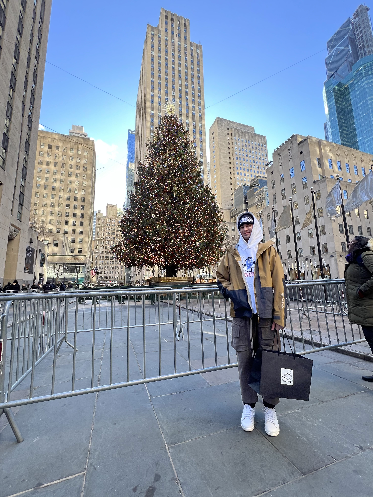
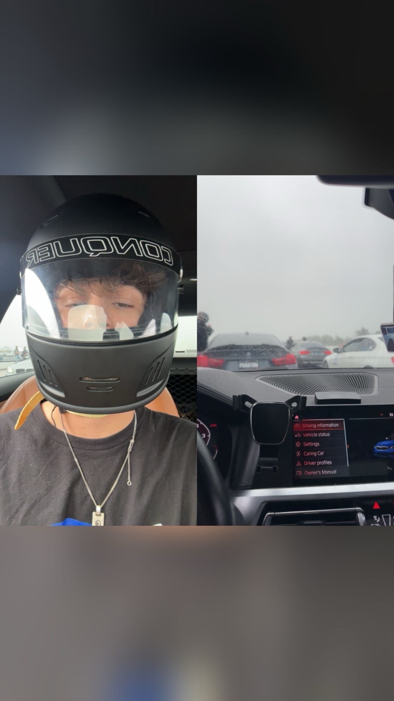
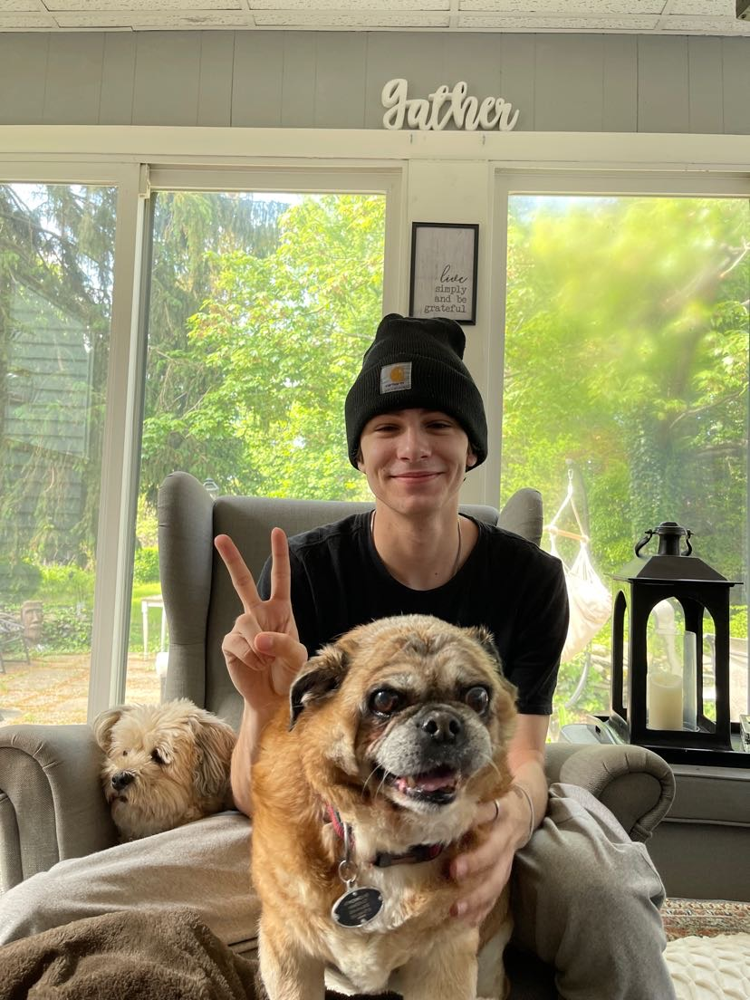
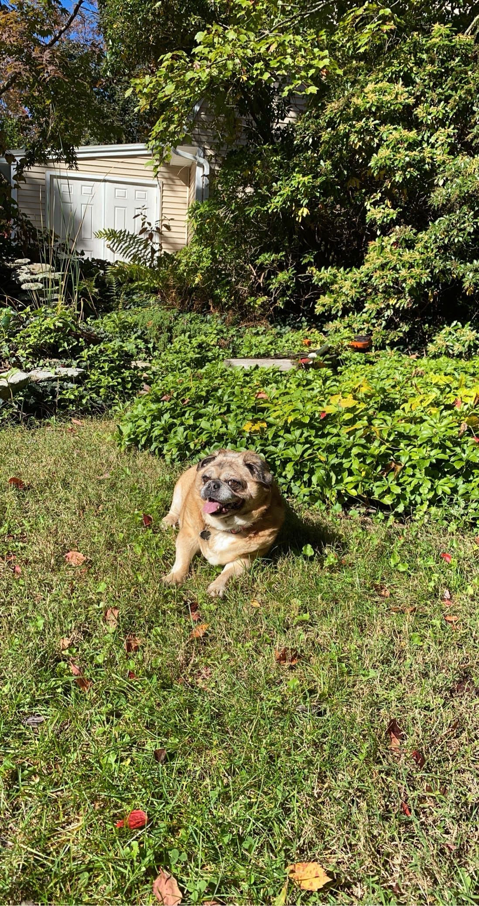
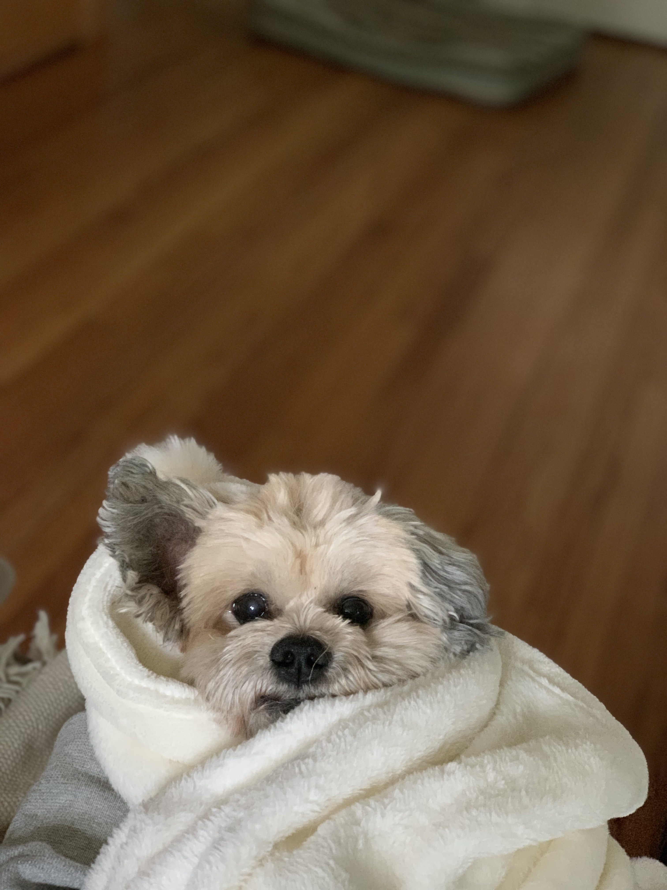
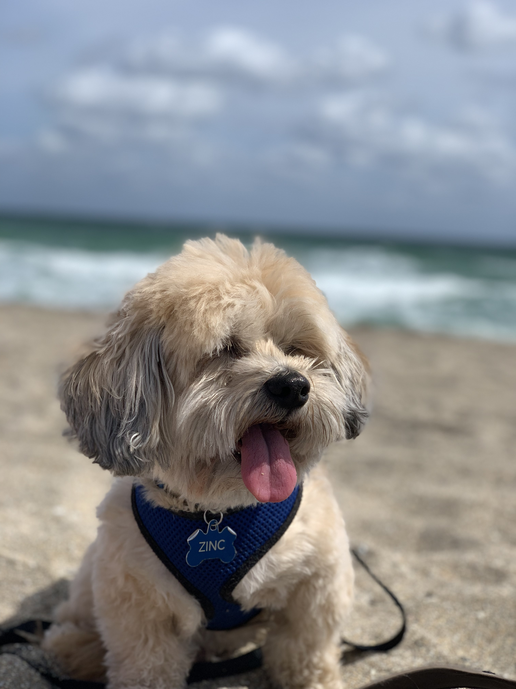

About Me
Hi everyone, my name is Henry Cort. I was born and raised in Hamden, Connecticut, and I grew up with a passion in all types of tech. I attended Hamden Hall Country Day school where I found a liking towards coding and technology. Once I found my path, I started working at my dad's IT office where they protected Medical Practices all over Connecticut. I worked with both hardware and software, even t the point of building machines including my own personal computer I use daily since it was built in 2015. I was taught how to protect data and the importance of it, which eventually lead to my interests set towards Quinnipiac's 3+1 Cyber Security Program. I am a Senior now graduating in Spring 2025, and am grateful I took the chance to expand my knowledge with security. My mom has worked in finance her entire life which lead to my appreciation for Wall Street and the stock market and how important of a role they play in the economy. I started a focus on general business at Quinnipiac, learning about finances, econmcs, marketng, and accounting. This opened up my eyes to see how important some data really is, and why it is so crucial to protect it, which lead me to research the "Importance of Cybersecuity in Finance" for my senior thesis project. I wanted to focus on this for my project because it's an industry I have a deep passion for and I would love to work on with this in the future. I will link the project below when it is finalized.
Skills & Tools
- Java
- JavaScript
- Python
- HTML & CSS
- C/C++
- SQL
- Bash/PSH
- R
- Git & GitHub
- VS Code
- Excel
- Adobe (Photoshop/Lightroom/Premiere)






Interest/Hobbies
Above are some pictures of myself and a few of my old pets who were a big part of my life growing up. Outside of coding and technology, I have a deep passion for fashion, cars, and dogs. I’ve always loved streetwear culture, and my love for fashion eventually evolved into a love for all kinds of clothing and footwear. I’m fascinated by how fashion can be used as a personal language; the way someone dresses is often an extension of who they are, and I love how everyone’s unique taste tells a different story. A perfect day for me is heading into New York City to explore SoHo, check out the latest drops, and visit the brands I grew up wearing and supporting. I’m also a huge automotive enthusiast. From classics to modern track-ready machines, I love working on, driving, and modifying vehicles—especially German cars. That passion stems from my dad, who worked as an automotive engineer and always involved me in the garage or took me along to races. Together, we bonded over all things mechanical. That early exposure really shaped my love for the auto world. Over the years, I’ve continued to pursue that hobby, even participating in racing events. One of my favorite annual trips is to Pocono Raceway for MPact, a massive BMW-focused car event where we race on a NASCAR-style track and connect with other enthusiasts. Aside from those interests, I’m someone who thrives on creative expression and hands-on work. Whether I’m building out a full-stack app, detailing a car, or styling an outfit, I put my personality into everything I do. If you asked me to describe myself in three words, I’d go with: curious, driven, and expressive.